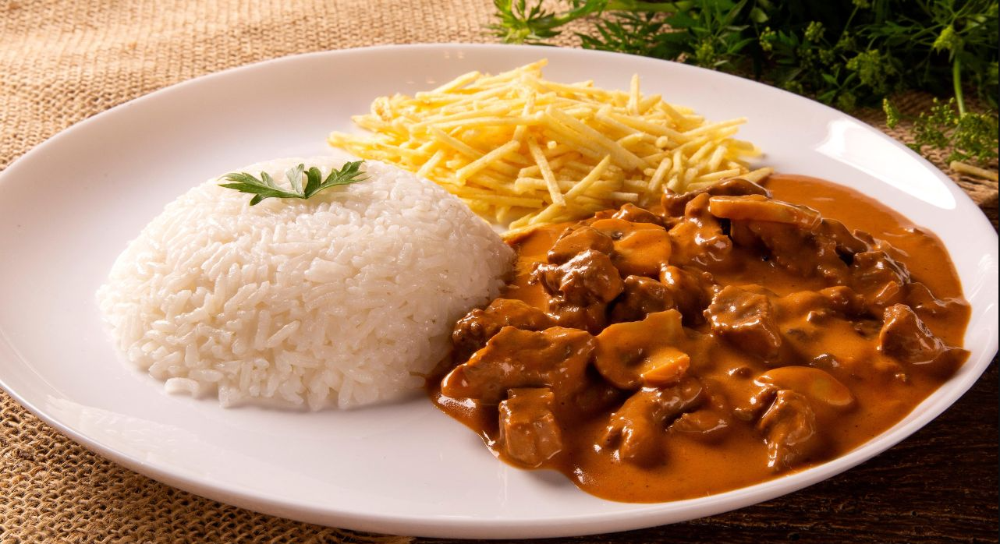
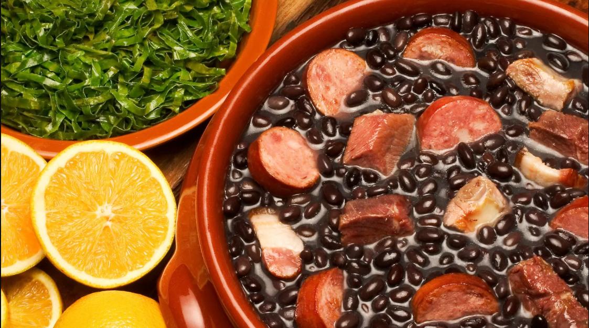
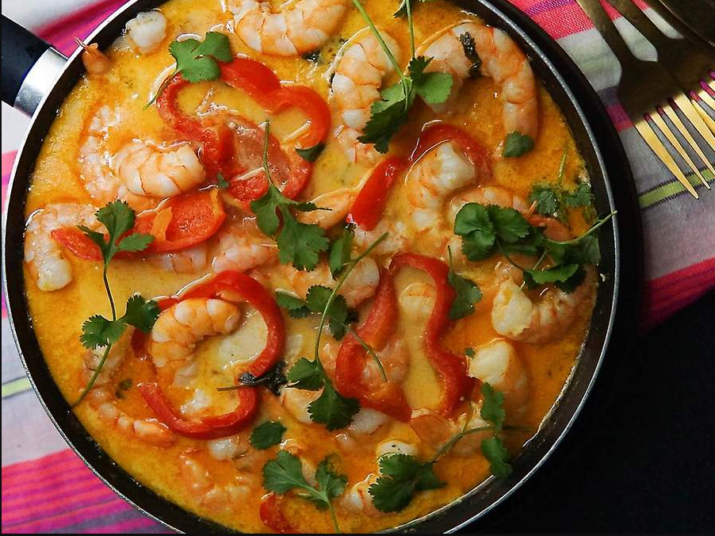

Strogonoff de carne  Prato muito comum nas mesas do Brasil. Muito gostoso e fácil de se fazer. Veja mais sobre esse prato
Feijoada Mineira  Prato da cultura brasileira. Prato mundialmente conhecido e amado por todos. Veja mais sobre esse prato
Moqueca  Prato apreciado em todas regiões do Brasil. Receita fácil e rápida de ser preparada. Veja mais sobre esse prato